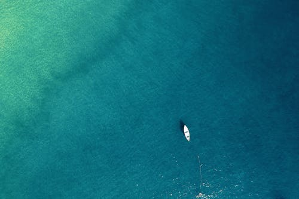
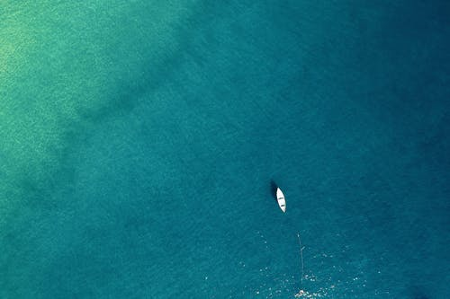

Playas
El sol y la arena son indicios de que la felicidad más pura existe.
Playas del PerúNo hay nada como despertarse con el sonido del mar. Este es el plan perfecto para los amantes del agua salada, la arena y calor del sol. Si tienes claro que la orilla del mar es la mejor opción para disfrutar del verano, te encantará hacer un camping en playa o, mejor aún, visitar las calas más bonitas de tu país o ciudad.
Como venimos diciendo, este plan es perfecto para los que adoran la naturaleza. Puedes aprovechar para conocer rutas por la mañana temprano y darte un chapuzón en algún río, eso sí siempre y cuando esté permitido su baño. Además, podrás disfrutar de noches estrelladas, pues la contaminación lumínica es escasa en estos sitios.
Aviso a navegantes. Si te encantan los barcos, es un buen momento para alquilar uno y recorrer el mar cada día. Aunque permanezca encallado en un mismo puerto, es ideal para salir a navegar de mañana y pasar el día junto a los peces. Es una bonita manera de conocer nuevas zonas desde el mar y de desconectar por completo de la urbe.
Leer másEl sol y la arena son indicios de que la felicidad más pura existe.
Playas del PerúEl sol brilla en todas partes, no sólo en la playa.
¡Vamos de viaje!Siempre nos encontraremos a nosotros mismos en el mar.
¡Naveguemos!Según cifras del Ministerio del Ambiente, el 46% de los residuos que hay en las playas peruanas son de plástico. Este material, que tarda cientos de años en biodegradarse, es el que se encuentra en la mayor parte de playas y no solo ensucia el espacio sino que también afecta gravemente a las especies que viven en él.

 

¡Empezamos fuerte! El paracaidismo no entiende de miedo a las alturas ni de vértigos. Todos aquellos que quieren emociones fuertes se apuntan a una actividad de estas características. Una avioneta se encarga de poner al paracaidista en la posición ideal para saltar fuera de ella.
El recorrido en globo es otro de los planes que puedes hacer por el aire. Con tus amigos, con tu familia o con tu pareja, las vistas que puedes contemplar desde las alturas son difícilmente olvidables. Eso sí, elige bien el día del paseo, ya que en caso de excesivo viento, tendrá que ser cancelado. Una de las ventajas que tienen los recorridos en globo es que te permitirán contemplar tanto paisajes montañosos como paisajes urbanos. ¡Disfruta de esta tranquila actividad regalada por el cielo!
El senderismo es una actividad que nunca falla. En otoño, las bonitas estampas y las agradables temperaturas, permiten planear un gran abanico de rutas. España es un país abarrotado de sistemas montañosos hermosos, por lo que no debemos desaprovechar la oportunidad de avistarlos.